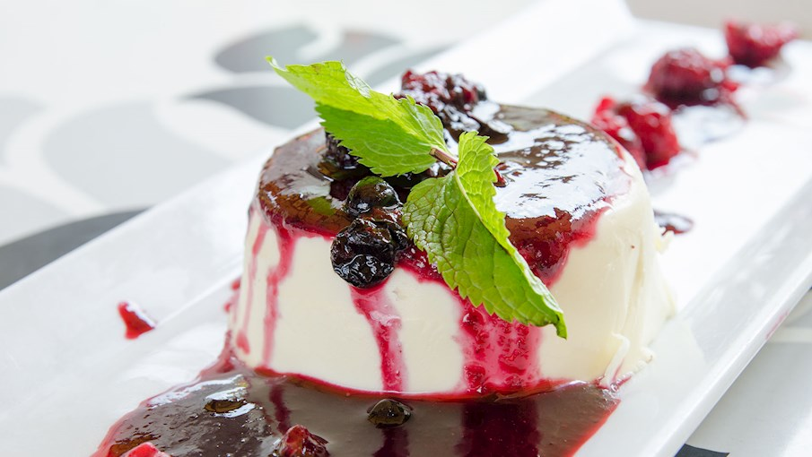

Panna Cotta
6 servings
For the Panna Cotta
- Vegetable oil
- 1/2 cup cold milk
- 3 teaspoons unflavored gelatin powder
- 1/3 cup (67g) sugar
- Pinch salt
- 1/2 cup sour cream
- 1 teaspoon vanilla extract
- 3 cups heavy cream
For the Sauce and berries
- 1 (12-ounce) package (about 3 cups) frozen raspberries, defrosted
- 3 tablespoons sugar
- 3 tablespoons orange juice
- 2 cups fresh blueberries, raspberries, blackberries, sliced strawberries, or a mix
Preparation
- Prepare the molds: Lightly brush or spray six 6-ounce ramekins with oil. (Skip this step if you are planning to serve straight from the dishes.) Place the ramekins on a baking sheet for easy transfer of the panna cotta from the counter to the fridge.
- Soften the gelatin: Pour the milk into a medium mixing bowl and sprinkle the gelatin over top. Stir with a fork to combine. Set aside for 5 minutes without stirring to allow the gelatin to soften. (It will look like curdled milk or milky applesauce.)
- Warm the cream and sugar: In a medium saucepan over medium heat, bring the cream, sugar, and salt to a simmer. Stir frequently until the sugar is dissolved and the milk is just starting to steam. Do not let it come to a boil (if it does, let it cool slightly before continuing to the next step).
- Whisk the cream into the gelatin: Slowly pour the hot cream over the gelatin, whisking as you go in order to dissolve the gelatin. Rub a little of the cream mixture between your fingers to make sure the gelatin has dissolved; it should feel smooth, not grainy.
- Add the sour cream and vanilla: Whisk in the sour cream and vanilla until smooth.
- Fill and chill the molds:
Divide the panna cotta mixture between the ramekins. Transfer to the ramekins to the fridge and chill for at least 4
hours until set, or overnight.
Step 7
- Make the raspberry sauce: Close to when you're ready to serve, puree the raspberries, sugar and orange juice in a blender until smooth. Pass through a fine meshed strainer to remove the seeds. Set aside or refrigerate until needed. (This sauce can also be made several days in advance and kept refrigerated.)
- Unmold the panna cotta: Slide a paring knife around the edge of each ramekin. Place a dessert plate upside-down over the top of the ramekin. Holding the plate in position, flip it over so the ramekin is now upside down on top of the plate. Slowly lift the ramekin at a slight angle to release the panna cotta. Spoon some of the sauce around the panna cotta and sprinkle with berries. (If you're serving straight from the dish, spoon some of the sauce over top and sprinkle with berries.)